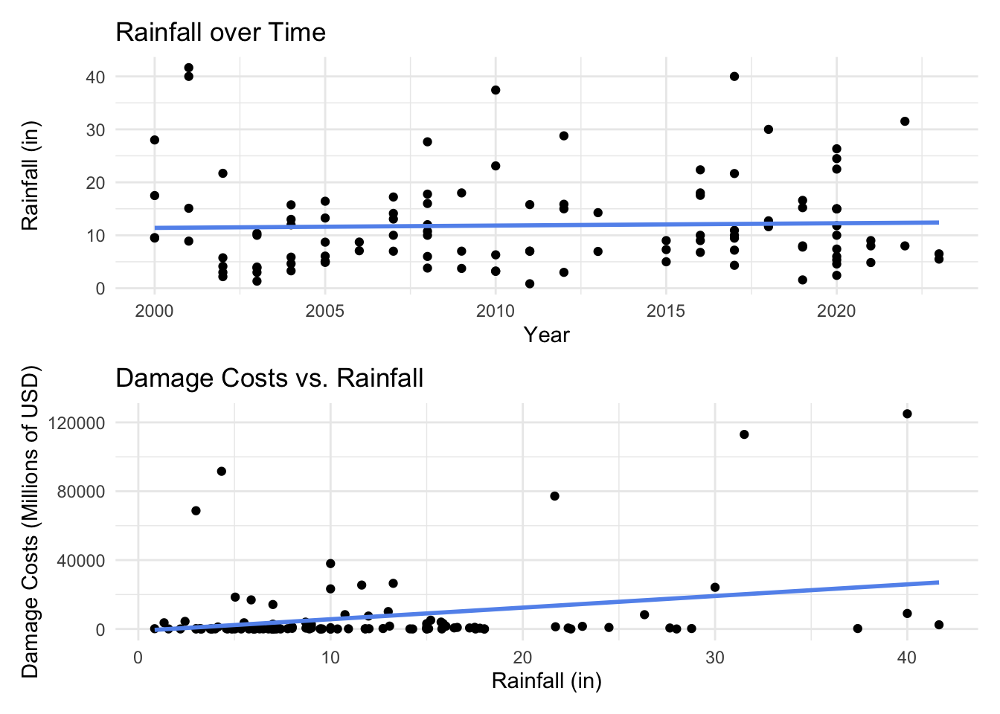

For more information, visit my GitHub Repository.
Introduction
Growing up on the Gulf Coast of Florida, my family and I were no strangers to hurricanes. We have lived in the same house for over 20 years, where some of my favorite hurricane memories included missing school, kayaking in the streets, and rushing our ice cream to our neighbor’s generator-powered freezer before it melted. However, recent hurricane seasons1 have brought a somber increase in flooding and severe damage. Storm preparations for many Floridians have changed from generally playful “hurricane parties” to fearful arrangements for evacuation, reflecting a dynamic shift in the severity of these events.
Climate change is influencing natural disasters across the board, and hurricanes are no exception. While the frequency of storms is not projected to change, they are predicted to become more intense2. Hurricane “intensity” is measured by the Saffir-Simpson scale3 in 5 categories based on wind speed. Storms assigned a category 3 or higher are considered “major hurricanes,” expected to bring catastrophic damage (and thus more significant damage costs to the community).
For example, Hurricane Ian was a Category 5 storm that landed near Fort Myers, Florida in September 2022. It was the fifth-strongest hurricane to hit the contiguous U.S. and the third most expensive weather disaster worldwide at the time, totaling $113 billion in damages4. This storm stands out as the worst to hit our neighborhood during my lifetime, bringing an unprecedented 7 feet of storm surge into our home.
My personal observations and research on the topic lead me to my question: as storms increase in intensity, are damage costs also being driven by time?
In other words, are we seeing a rise in the damage costs associated with these natural disasters, and what can we expect in the future? To answer this question, I used Kaggle’s North American Hurricanes from 2000 dataset to develop a model of the factors driving hurricane damage costs. Of these factors, I predict that time affects damage costs (increasing over time).
To test this prediction, I establish a null (H0) and alternative (HA) hypotheses:
- H0: Time has no effect on damage costs.
- HA: Time has an effect on damage costs.
Methods
Import packages
Expand Code
# Load required packages
library(tidyverse)
library(janitor)
library(patchwork)
library(kableExtra)
library(webshot2)
library(here)Using the above R packages, I begin my analysis by investigating the NA values associated with damage costs (damage_usd). There are 14 in total, and they appear to be proportionally distributed among hurricane categories; so, I decide to remove them.
Import data
Expand Code
# Remove scientific notation
options(scipen=999)
# Import hurricane data
hurricane_data <- read_csv(here("posts/", "2024-12-10-atlantic-hurricanes/", "data/", "Hurricane Data.csv"), show_col_types = FALSE) %>%
clean_names()Expand Code
# Total storms by category
total_storms <- hurricane_data %>%
group_by(category) %>%
summarise(count = n()) %>%
rename(Category = category,
Count = count)
print(paste("There are", sum(is.na(hurricane_data$damage_usd)), "NA values associated with damage cost."))[1] "There are 14 NA values associated with damage cost."Expand Code
# Check NA values for damage (by category)
na_storms <- hurricane_data %>%
filter(is.na(damage_usd))%>%
group_by(category) %>%
summarise(count = n()) %>%
rename(Category = category,
Count = count)
na_table <- left_join(total_storms, na_storms, by = "Category") %>%
rename("Total Storms" = Count.x,
"NA Damage" = Count.y) %>%
arrange(factor(Category, levels = c('TS', 'Category 1', 'Category 2', 'Category 3', 'Category 4', 'Category 5'))) %>%
kbl() %>%
kable_styling()
na_table| Category | Total Storms | NA Damage |
|---|---|---|
| TS | 55 | 11 |
| Category 1 | 22 | 1 |
| Category 2 | 6 | 1 |
| Category 3 | 7 | NA |
| Category 4 | 21 | 1 |
| Category 5 | 14 | NA |
Since damage costs are reported as high as $140,000,000,000, I decided to scale the damage_usd column to represent millions of dollars and saved this variable as damage_mil.
Expand Code
# Remove rows with NA values for damage costs
hurricane_data_cleaned <- hurricane_data[!is.na(hurricane_data$damage_usd),]
# Find total number of areas affected
hurricane_data_cleaned <- hurricane_data_cleaned %>%
separate_longer_delim(affected_areas, ",") %>%
group_by(year, name, category, rain_inch, highest_wind_speed, damage_usd, fatalities) %>%
summarise(total_areas = n()) %>%
# Scale down damage costs
mutate(damage_mil = damage_usd/1000000,
time = year - 2000)To test my hypothesis, I will need to calculate the regression coefficient (Beta) associated with time. In order to calculate this sample statistic, I need to develop a model for damage costs. I am primarily interested in the following variables from my dataset:
year: the year the storm occurredrain_inch: rainfall (inches)highest_wind_speed: max wind speed (mph)damage_usd: damage costs in USDaffected_areas: list of places affected
I chose these variables because they are characteristics of the storm that potentially have a relationship with storm damage costs. While variables such as “fatalities” are likely correlated with damage costs, they are more likely a result of storm intensity rather than a predictor. I also chose to forego category since we are already have a variable for wind speed.
The category 5 classification encompasses wind speeds of 157+ mph. As an open-ended category, increased damage costs may be associated with an increasing number of Category 5 storms. More storms will likely be classified as Category 5 due to increasing wind speeds (as a result of increasing storm intensity). So, max wind speed (highest_wind_speed) will likely be the most important predictor in my model. Since rainfall (rain_inch) intensity is also expected to increase with climate change, it will be crucial to include as well.
Expand Code
# Wind speed over time
wind_time <- ggplot(hurricane_data_cleaned, aes(x = year, y = highest_wind_speed)) +
geom_point() +
labs(x = "Year",
y = "Max Wind Speed (mph)",
title = "Max Wind Speed over Time") +
geom_hline(yintercept =157,
linetype = "dashed",
color = "firebrick") +
geom_smooth(method = "lm", se = FALSE, linewidth = 1, color = "cornflowerblue") +
theme_minimal()
# Wind vs. damage
wind_damage <- ggplot(hurricane_data_cleaned, aes(x = highest_wind_speed, y = damage_mil)) +
geom_point() +
labs(x = "Max Wind Speed (mph)",
y = "Damage Costs (Millions of USD)",
title = "Damage Costs vs. Max Wind Speed") +
geom_smooth(method = "lm", se = FALSE, linewidth = 1, color = "cornflowerblue") +
theme_minimal()
wind_time / wind_damageYou can see how the time period 2000-2014 had 2 category 5 storms while the time period 2015-2023 has 8.
Expand Code
# Rainfall over time
rain_time <- ggplot(hurricane_data_cleaned, aes(x = year, y = rain_inch)) +
geom_point() +
labs(x = "Year",
y = "Rainfall (in)",
title = "Rainfall over Time") +
geom_smooth(method = "lm", se = FALSE, linewidth = 1, color = "cornflowerblue") +
theme_minimal()
# Rain vs. damage
rain_damage <- ggplot(hurricane_data_cleaned, aes(x = rain_inch, y = damage_mil)) +
geom_point() +
labs(x = "Rainfall (in)",
y = "Damage Costs (Millions of USD)",
title = "Damage Costs vs. Rainfall") +
geom_smooth(method = "lm", se = FALSE, linewidth = 1, color = "cornflowerblue") +
theme_minimal()
rain_time /rain_damageI created two new variables to include in the model. The first one measures the number of places affected, total_areas, calculated by counting how many “areas” are listed in the areas_affected column from the original dataset. While it seems intuitive that total_areas may increase over time, that isn’t the case (FIGURE?). However, there is still a relationship between total_areas and damage_mill, so we will include it. The last factor that I am interested in is time. Since we are looking at change over time, and 2000 is the start of the dataset, I calculated the time variable to be the number of years since 2000 that the storm occurred.
Expand Code
# Number of places over time
places_time <- ggplot(hurricane_data_cleaned, aes(x = year, y = total_areas)) +
geom_point() +
labs(x = "Year",
y = "Number of Places Affected",
title = "Number of Places Affected over Time") +
geom_smooth(method = "lm", se = FALSE, linewidth = 1, color = "cornflowerblue") +
theme_minimal()
# Number of places vs. damage costs
places_damage <- ggplot(hurricane_data_cleaned, aes(x = total_areas, y = damage_mil)) +
geom_point() +
labs(x = "Number of Places Affected",
y = "Damage Costs (Millions of USD)",
title = "Damage Costs vs. Number of Places Affected") +
geom_smooth(method = "lm", se = FALSE, linewidth = 1, color = "cornflowerblue") +
theme_minimal()
places_time / places_damage
Expand Code
# Damage costs over time
ggplot(hurricane_data_cleaned, aes(x = time, y = damage_mil)) +
geom_point() +
labs(x = "Time (Years since 2000)",
y = "Damage Costs (Millions of USD)",
title = "Damage Costs vs. Time") +
geom_smooth(method = "lm", se = FALSE, linewidth = 1, color = "cornflowerblue") +
theme_minimal()The multiple regression equation that I settled on is:
damage_mil~highest_wind_speed + rain_inch + total_areas + time
damage_mil = Beta 0 + Beta 1 * wind speed + Beta 2 * rainfall + Beta 3 * number of places affected + Beta 4 * time
Expand Code
# Create the model
damage_model <- lm(damage_mil ~ highest_wind_speed + rain_inch + total_areas + time, data = hurricane_data_cleaned)
summary(damage_model)
Call:
lm(formula = damage_mil ~ highest_wind_speed + rain_inch + total_areas +
time, data = hurricane_data_cleaned)
Residuals:
Min 1Q Median 3Q Max
-26812 -8091 -3670 3719 92553
Coefficients:
Estimate Std. Error t value Pr(>|t|)
(Intercept) -21877.43 5970.28 -3.664 0.000389 ***
highest_wind_speed 175.69 43.61 4.029 0.000106 ***
rain_inch 610.73 215.81 2.830 0.005571 **
total_areas 70.82 604.22 0.117 0.906920
time 377.55 261.77 1.442 0.152163
---
Signif. codes: 0 '***' 0.001 '**' 0.01 '*' 0.05 '.' 0.1 ' ' 1
Residual standard error: 18530 on 106 degrees of freedom
Multiple R-squared: 0.2332, Adjusted R-squared: 0.2042
F-statistic: 8.057 on 4 and 106 DF, p-value: 0.00001036Using this model, I calculated the regression coefficients (Beta 1, Beta 2, Beta 3, and Beta 4) and their associated p-values.
Expand Code
# p-values
beta1_p <- summary(damage_model)$coefficients[2,4]
beta2_p <- summary(damage_model)$coefficients[3,4]
beta3_p <- summary(damage_model)$coefficients[4,4]
beta4_p <- summary(damage_model)$coefficients[5,4]
beta <- c(beta1_p, beta2_p, beta3_p, beta4_p)
# Print p-values
for (i in seq_along(beta)) {
print(paste0("The p-value for Beta ", i, " is ", beta[i], "."))
}[1] "The p-value for Beta 1 is 0.000105720738882069."
[1] "The p-value for Beta 2 is 0.00557054755522526."
[1] "The p-value for Beta 3 is 0.906919636226243."
[1] "The p-value for Beta 4 is 0.152163328387691."To visualize damage predictions by the model, I looked at damage costs over time by wind speeds (broken down by category) and by rainfall (by quantiles). To visualize damage predictions by wind speed, I held rainfall and total areas constant at their mean values. To visualize damage predictions by rainfall quantile, I held wind speed and total areas constant at their mean values.
Expand Code
# Update model
predictions <- expand_grid(
highest_wind_speed = c(74, 96, 111, 130, 157),
rain_inch = mean(hurricane_data_cleaned$rain_inch),
total_areas = mean(hurricane_data_cleaned$total_areas),
time = seq(0, 23, length.out = 100)) %>%
mutate(damage_predicted = predict(damage_model,
newdata = .,
type = "response"))
#Visualize
ggplot(predictions, aes(time, damage_predicted, color = factor(highest_wind_speed))) +
geom_line() +
scale_color_brewer(palette = "Reds",
name ="Wind Speed (mph)",
labels = c("74 (Cat 1)", "96 (Cat 2)", "111 (Cat 3)", "130 (Cat 4)", "157 (Cat 5)")) +
labs(x = "Years Since 2000",
y = "Predicted Damage Costs (Millions of USD)",
title = "Predicted Damage Costs over Time by Wind Speed") +
theme_bw()Expand Code
# Update model
predictions3 <- expand_grid(
highest_wind_speed = mean(hurricane_data_cleaned$highest_wind_speed),
rain_inch = c(quantile(hurricane_data_cleaned$rain_inch)[2],
quantile(hurricane_data_cleaned$rain_inch)[3],
quantile(hurricane_data_cleaned$rain_inch)[4]),
total_areas = mean(hurricane_data_cleaned$total_areas),
time = seq(0, 23, length.out = 100)) %>%
mutate(damage_predicted = predict(damage_model,
newdata = .,
type = "response"))
# Visualize
ggplot(predictions3, aes(time, damage_predicted, color = factor(rain_inch))) +
geom_line() +
scale_color_brewer(palette = "Reds",
name ="Rainfall (in)") +
labs(x = "Years Since 2000",
y = "Predicted Damage Costs (Millions of USD)",
title = "Predicted Damage Costs over Time by Rainfall Quantiles") +
theme_bw()
Conclusions
I found that the p-values for Beta 1 (hightest_wind_speed) and Beta 2 (rain_inch) were less than \(alpha=0.05\). While we cannot confirm that damage costs are affected by max wind speed and rainfall, we can rule out that their influence is due to random chance.
However, to answer my initial question, we must look at Beta 4. Both Beta 3 (total_areas) and Beta 4 (time) were greater than \(alpha=0.05\). So, we fail to reject the null hypothesis for time:
- H0: Time has no effect on storm damage costs.
To conclude, I could not rule out that the effect of time on damage_mil could be due to random chance.
There are more than a few limitations to this analysis. First and foremost, the cleaned dataset only includes 111 observations from a 23-year time period. It would be ideal to have more observations from a longer time range to asses how damage costs have changed over time. In addition to a limited time range, it was not clear the source of the data and how particular variables were calculated. For example, what determined whether or not a place was named in the list of areas_affected? How was total rainfall calculated?
I also think there is omitted variable bias for inflation. Damage costs could be primarily driven by the rising costs of building materials or bubbles in the real estate market.
According to the literature, variables such as storm surge and water temperature would be interesting predictor to include as they are expected to increase with storm intensity.
Next steps
Given more time, I would have been interested in compiling a better dataset. The dataset used in this analysis isn’t the best (no original source or thorough descriptions of variables i.e. rainfall?).
https://www.ncei.noaa.gov/access/billions/
References
https://stock.adobe.com/search/images?k=hurricane
Footnotes
Hurricane season runs June 1 to November 30, but since 2021, the National Hurricane Center (NHC) has considered moving the start date to May 15 to encompass increasing early-season activity.↩︎
Read more about how hurricanes are expected to evolve with climate change here.↩︎